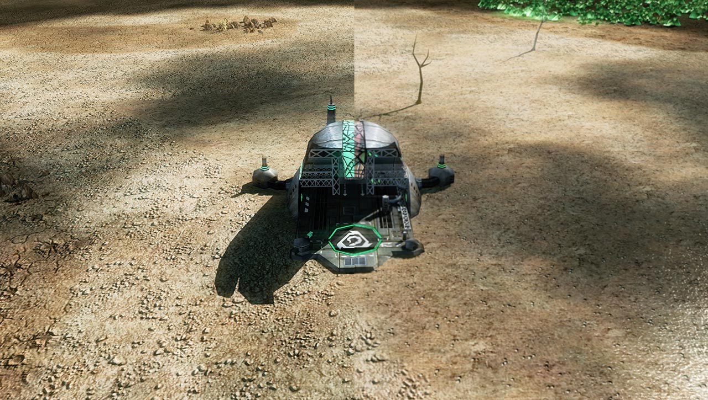

BUILT USING NEURAL NETWORKS
Using cutting edge neural networks and the very latest technology, Kane’s Wrath has been remastered in 4K.

CUSTOM UNIT SKINS
Custom skins such as the Kane Edition skins, and unique Zone Troopers, mulit-coloured lasers and much more are available using this texture pack.

OVER 1450+ REMASTERED IMAGES
Using neural networks we were able to re-create the game you love and bring it to modern standards, with over 1450+ textures completed so far, this mod takes your Kane's Wrath experience to a new level.

UPSCALED UNIT PORTRAITS
The user interface, including all unit portraits has been remastered and modifications have been made to make the units clearer and more desireable.

4K TEXTURE PACK
STANDARD GAME
Greater dynamic range, more colour and sharper textures.
DONATE
DOWNLOADS
To use this mod, it’s recommended you have a GPU with at least 4GB of video memory or VRAM to run this mod smoothly at 4K resolution.